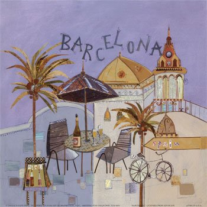
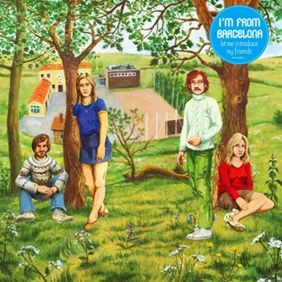

Španske slike, 1. deo
Odlučila sam da tokom narednog perioda pišem o Španiji, u nekoliko nastavaka. Ima nekoliko razloga. Za mene, kad dođe proleće-leto, tema Mediterana postaje baš hot. Zatim, ovog leta idem u Španiju. Iz prethodne dve posete imam mnogo utisaka. Štaviše, odavno želim da me zadrže u Barseloni, kako god znaju. I na kraju, ali ne najmanje bitno: Španija ima bar dve bitne sličnosti sa nama.
Dugo su, decenijama, živeli u autokratskom-diktatorskom režimu (definicije Frankove vladavine se razlikuju), i imaju izražene regionalne identitete, sa težnjama ka autonomiji ili nezavisnosti. Razlike između Španije i nas u pogledu dve poslednje stvari su u tome kako se ko nosi sa ovim izazovima. Kultura i mediji su one oblasti o kojima znam više nego o npr. ekonomija pa, iako je ubrzan razvoj ekonomije veoma pomogao Španiji da prevaziđe zaostalost iz perioda Franka, veoma je bitna bila i posvećenost razvoju kulture i medija. U transformaciji kroz koju je prošla Španija vrlo su povoljno uticali i pozitivni politički procesi. Ima ljudi koji su se akademski bavili komparacijama u tranzicijama jugoistočne Evrope (mi) i južne Evrope (oni). Jedan od pesimističkih, ali realnih zaključaka je taj da smo mi u mnogo goroj situaciji jer se zajedno sa političkom transformacijom zemlje dešava i ekonomska tranzicija i rešavanje držvnosti, odnosno utvrđivanja granica.
***
Za razliku od ovogodišnje, koja će biti potpuno turistička, moje prethodne dve posete Španiji, odnosno Barseloni, bile su u osnovi stručne.
Prva je bila ekskurzija, bila sam na masteru u Italiji i otišli smo u razne gradove da u praksi vidimo njihove kulturne politike. Deo nas bio je u Barseloni. Još uvek imam sačuvan program te posete. Prvi dan sedmodnevne posete nazvali su 'Tradicija' - 23. april je praznik San Giorga, zaštitnika Katalonije - dan kad se u ovoj regiji poklanjaju knjige i ruže. Program narednih dana je isto imao po jednu temu i jedan naslov: Umetnost, Kulturna politika i istorija, Mediji, Muzika, Izdavaštvo i pozorište. U praksi je to značilo da smo šest dana od jutra do noći išli na predavnja, prezentacije, razgovore sa umetnicima i menadžerima kulturnih institucija, posete izdavačkim kućama, filharmoniji, pozorištima, muzejima, univezitetima, onda u obilaske obližnjih gradova i tamo još razgovora i prezentacija, koncerti, izložbe. Naravno, i obilasci Gaudijevih građevina. Casa Mila ili La Pedrera je jedna od mojih omiljenih pojava na Zemlji. Bilo je preterano i fenomenalno. Naravno, najbolje je bilo poslednjeg dana, koji je bio slobodan. Posetili smo tad Pikasov muzej, a onda se posvetili sedenju i ležanju na plaži. Uveče su nas odveli na žurku u kući na brdu iznad grada.
***
Drugi put sam išla u Barselonu sama. U pitanju je bio Barcelona Forum, mega veliki dogoađaj koji je kroz razne aktivnosti trajao više meseci. Ja sam išla na neki event o medijima, i pričala o ovoj našoj medijskoj tragediji, u nedostatku boljeg termina nazvanoj tabloidi. Mislim na dnevne štampana izdanja koje se bave političkim i drugim temama na prividno tabloidan način, a u stvari...OK, da se vratim na Španiju.
Tu drugu posetu je obeležilo nekoliko pojava. Prva je da se njihov princ ženio dan nakon mog odlaska iz Španije. Što znači da je proces dobijanja viza bio otežan, zbog pojačane bezbednosne pažnje. To je takođe značilo da je na televiziji i u novinama to bila dominantna tema kojoj sam se umorna od sesija i šetnji posvećivla u slobodno vreme, uglavnom prateći slike - tj. razne haljine, frizure, nakit - tokom tih procesa priprema i pripremnih partija na dvora i šire. Pošto je princeza bivša novinarka, to se takođe uklapalo u moj medijski fokus. Na medjskim sesijama iznenadila sam se žarom kojim su Italijani (tada je njihov premijer bio Berluskoni) i Amerikanci (njihov predsednik je i tada bio Buš Jr) mračnim tonovima opisivali medijske situacije u svojim zemljama. Pošto sam kulturne institucije tokom prethodne posete upoznala, ovaj put je bilo lako ih ignorisati. Otišla sam samo da spolja vidim Sagrada Familju. U pogledu na nju sam najviše užival iz obližnjeg kafea, uz pivo. Mislila sam da ću posle silnih fotografija biti ravnodušna prema ovoj građevini. Ali ne. Ona fascinira i samim izgledom, i načinom na koji se uklapa (dominirajući) u ambijent. Još jednom se pokazalo da je doživljaj uživo bez premca i da prizori i znamenitosti koji se čine izlizanim od preterane poznatosti mogu da oduševe kad ih jednom i STVARNO vidite.
Ukratko, i ovaj put htela sam da ostanem. Ali nisam. Videćemo kakav će biti treći susret. O tome ću, pretpostavljam pisati.
Ali u međuvremenu:
- Zaključak: Lokalne vlasti u Barseloni kao sedištu Katalonije poklanjaju veliku pažnju jačanju kulture, jer tako promovišu svoj identitet, jezik i regiju
- 26 razloga za posetiti Barselonu
- Najava iskustava i analiza drugih ljudi o Španiji i Barseloni, nekad i sad
nastaviće se...
Komentari
 Viktor | 10.05.07 18:00
Viktor | 10.05.07 18:00
etotako | 10.05.07 18:17
la lara | 10.05.07 19:12
Casa Mila je nesto sto moram videti uzivo. A taj drugi put si se vratila i zbog mene :)
FiestyKit | 10.05.07 21:10
Zavid, zavid!. I donesi nam malo sunca u ovo naše pomračenje, da ne kažem mrak.
elektrokuhinja | 11.05.07 06:05
 Maja | 11.05.07 11:56
Maja | 11.05.07 11:56
Ja nikada nisam bio u Spaniji, a tripujem da bi mi potpuno odgovaralo tamo. Pozdrav za Barselonu!
 RSS feed
RSS feed
 sadržaji se objavljuju pod
sadržaji se objavljuju pod
Komentari
pozdrav za barselonu najljepsi grad na svijetu i najboljim fudbalskim klubom na svijetu fc.barseloni
marko | 02.08.07 00:23
La Laro... ja studiram menadzment i produkciju na Faklutetu dramskih umetnosti u Beogradu. Video sam tvoj post, i zapazio da si bila prosli put u Spaniji, ali u "strucnoj" poseti. Mene zanima i molio bih te da ako imas zabeleske(sve sto imas o tim institucijama) ili spisak kulturnih institucija u Spaniji, da mi posaljes na email(posto imam neki zadatak na temu kulturnih institucija). Ja bih ti bio do neba zahvalan, a kupio bih ti i cokoladu... moj emal:branko.gerasimovic@gmail.com ili banephoto@hotmail.com;
Unapred zahvalan,
Branko Gerasimovic
student II godine FDU
Beograd
Branko Gerasimovic | 27.11.07 14:46
Mislim da imam program te posete, cim nadjem prekucacu i poslati ti nazive institucija koje smo posetili - radi se samo o Barseloni i okolini. Pozdrav!
La Lara | 27.11.07 15:02